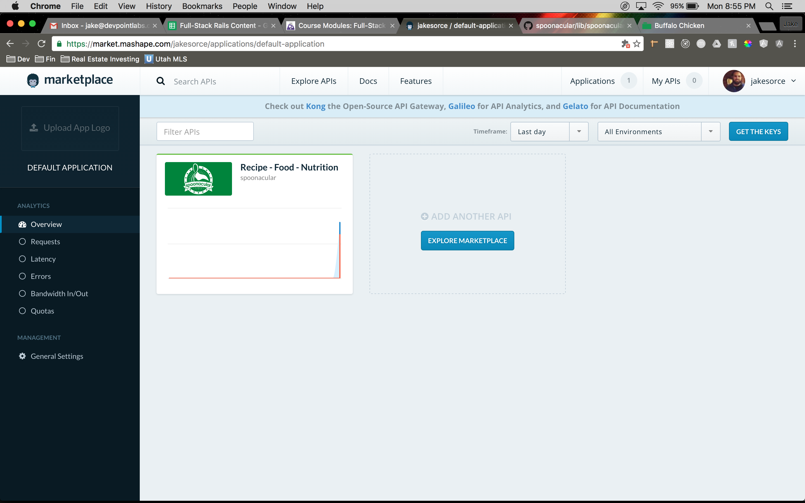
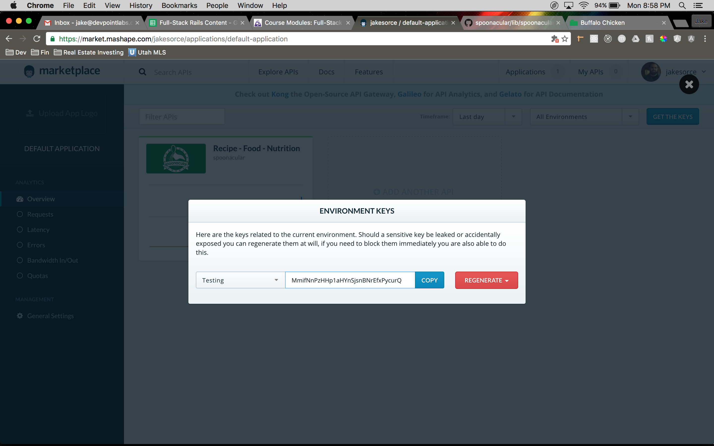

Signing Up For API Access
We will be using the Spoonacular API for this demo. Here are some first steps you need to take:
- Visit the Spoonacular API Site: https://spoonacular.com/food-api
- Sign up for a free account. You have to put your Credit Card in but if you select the free version it won’t charge you!
- Click on Applications at the top of the screen and then click on Default Application
- 
- 
- Save the key somewhere. This is our password to their API. This is how the API knows what data we are able to access and what data we aren’t able to access. This would be like logging into Devise as the current_user and having all your API calls scoped to only what that user can see / do.
Generate The Rails Project
rails new food_api -T -d postgresql
Gemfile
gem 'spoonacular'
group :development, :test do
gem 'pry'
gem 'annotate'
end
bundle exec rake db:create
Creating The Models - Has Many Through
bundle exec rails g model recipe title instructions:text vegetarian:boolean glutenFree:boolean dairyFree:boolean veryHealthy:boolean cheap:boolean veryPopular:boolean sustainable:boolean weightWatcherSmartPoints:integer servings:integer preparationMinutes:integer cookingMinutes:integer readyInMinutes:integer image
bundle exec rails g model ingredient aisle image name amount:float unit originalString
bundle exec rails g model recipe_ingredient recipe:belongs_to ingredient:belongs_to
bundle exec rake db:migrate
bundle exec annotate --routes
Setting Up The Models
class Recipe < ApplicationRecord
has_many :recipe_ingredients
has_many :ingredients, through: :recipe_ingredients
end
class Ingredient < ApplicationRecord
has_many :recipe_ingredients
has_many :recipes, through: :recipe_ingredients
end
class RecipeIngredient < ApplicationRecord
belongs_to :recipe
belongs_to :ingredient
end
Securing Our Spoonacular API KEY Within Our Rails Application
We need to secure our API token in our rails app. The biggest reason we do this is because when we push this code up to a PUBLIC Github repository the whole world will be able to see your API token if you commit it with the project. There are multiple ways of securing your sensitive data. We will use the Dot Env gem to accomplish this.
Gemfile
group :development, :test do
gem 'pry'
gem 'annotate'
gem 'dotenv-rails'
end
touch .env
touch .env.example
We don’t want to commit the .env file. This file is going to contain environment variables with sensitive data. We created a .env.example so that when other developers come into our project they can copy that file and rename it as .env and fill it out with all of their sensitive data. This file should NEVER be comitted that’s why we will add it to our .gitignore before we even put any data into it!
.gitignore
/.bundle
/log/*
/tmp/*
!/log/.keep
!/tmp/.keep
.env
.env
SPOONACULAR_API_KEY="gnSY00OsdfeqfqxHHp1aHYnSjsnBNrEfxPycurQ"
.env.example
Building A Custom Rake Task
bundle exec rails g task recipes fetch
This builds a custom rake task for us in the namespace recipes. The way we would call this rake task is:
bundle exec rake recipes:fetch
This would exectue all of the code in the fetch task. The code in the fetch task is going to be responsible for grabbing the first 10 paginated recipies from the API and saving them into our database for fast, on demand querying.
When you have code in a task like this, you can easily set Heroku up to run the code in specific tasks at specific intervals. This would allow us to run this task every 24 hours to pull in new data from the API.
lib/tasks/recipes.rake
namespace :recipes do
desc "Get The First 10 Recipes From The Spoonacular API"
task fetch: :environment do
recipes_added = 0
ingredients_added = 0
api_client = Spoonacular::API.new(ENV['SPOONACULAR_API_KEY'])
results = api_client.search_recipes.body['results']
results.each do |result|
full_recipe = api_client.get_recipe_information(result["id"]).body
recipe = Recipe.where(title: full_recipe['title']).first_or_initialize
full_recipe.each do |key, value|
begin
next if key == 'id'
recipe.send("#{key}=", value)
rescue => e
Rails.logger.error("No attribute found for #{key} on Recipe")
end
end
recipe.save
recipes_added += 1
full_recipe['extendedIngredients'].each do |i|
ingredient = Ingredient.where(name: i['name']).
first_or_initialize(aisle: i['aisle'],
image: i['image'],
amount: i['amount'],
unit: i['unit'],
originalString: i['originalString'] )
ingredients_added += 1 if ingredient.new_record?
RecipeIngredient.create(recipe_id: recipe.id, ingredient_id: ingredient.id)
end
end
puts 'Recipe Fetch Completed!'
puts "Number Of New Recipes: #{recipes_added}"
puts "Number Of New Ingredients: #{ingredients_added}"
end
end
The Spoonacular gem is not well documented (
https://github.com/dwoznicki/spoonacular/tree/master/lib/spoonacular/api). I had to dig through the code to see what methods were avaliable to me. I also had to do a lot of .methods calls on objects to see what methods I could perform on each Spoonacular object.
(we will cover this in more depth in class)The beauty of has_many_through relationships in Rails:
ingredient = Ingredient.first